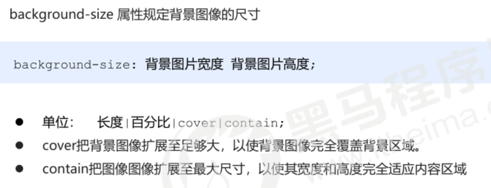

视口（viewport）就是浏览器显示页面内容的屏幕区域。 视口可以分为布局视口、视觉视口和理想视口
一个px的能显示的物理像素点的个数，称为物理像素比或屏幕像素比
- 对于一张 50px * 50px 的图片,在手机 Retina 屏中打开，按照iphone1:2的物理像素比会放大倍数，这样会造成图片模糊
- 在标准的viewport设置中，使用倍图来提高图片质量，解决在高清设备中的模糊问题
- 通常使用二倍图， 因为iPhone 6\7\8 的影响,但是现在还存在3倍图4倍图的情况，这个看实际开发公司需求
- 背景图片 注意缩放问题

1.移动端浏览器基本以 webkit 内核为主，因此我们就考虑webkit兼容性问题。 我们可以放心使用 H5 标签和 CSS3 样式。 同时我们浏览器的私有前缀我们只需要考虑添加 webkit 即可
2.CSS初始化 normalize.css,官网地址： http://necolas.github.io/normalize.css/
3.CSS3 盒子模型 box-sizing
也就是说，我们的CSS3中的盒子模型， padding 和 border 不会撑大盒子了
4. 特殊样式
/*CSS3盒子模型*/
box-sizing: border-box;
-webkit-box-sizing: border-box;
/*点击高亮我们需要清除清除 设置为transparent 完成透明*/
-webkit-tap-highlight-color: transparent;
/*在移动端浏览器默认的外观在iOS上加上这个属性才能给按钮和输入框自定义样式*/
-webkit-appearance: none;
/*禁用长按页面时的弹出菜单*/
img,a { -webkit-touch-callout: none; }